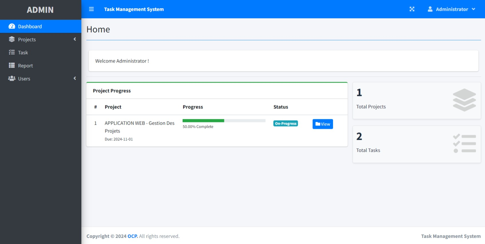

About Me
I am Ashraf Sellak, a second-year student at EHTP, specializing in Geographic Information Science (GIS) with a strong focus on full-stack JavaScript development. My academic background in GIS provides me with a deep understanding of spatial data, mapping, and geospatial technologies, which I complement with my skills in web development.
I have experience in both front-end and back-end JavaScript development using Node.js, Express, and modern frameworks, and have worked on a variety of projects, including task management systems, CV generators, and e-commerce platforms.
In addition to my development skills, I am proficient in spatial analysis, data visualization, and working with GIS tools such as ArcGIS and QGIS, enabling me to create geospatial applications and solutions. With expertise in databases like MongoDB and a commitment to continuous learning, I am eager to apply my diverse skills to innovative, real-world projects that merge technology and geography.
Fun Fact! I've been programming for 0 seconds!
Projects
Task Management System

Task Management System is a web application that allows users to create, edit, and delete tasks, projects and collaborate with teams and keep tracking progress.